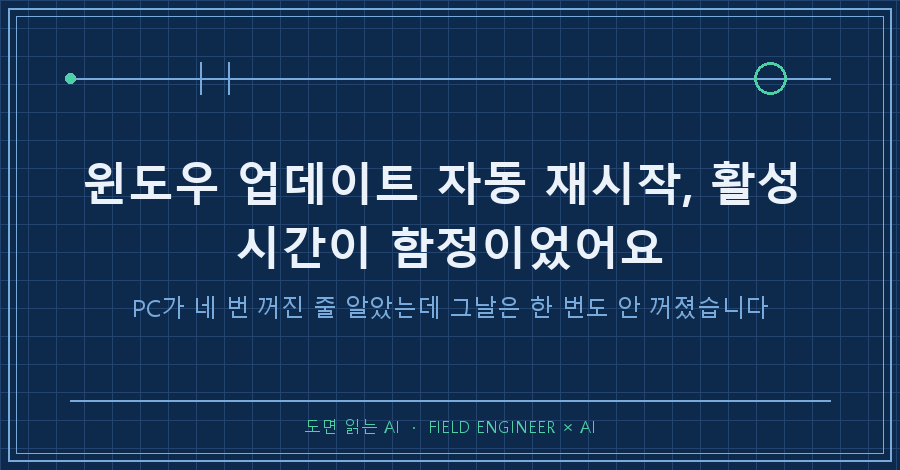
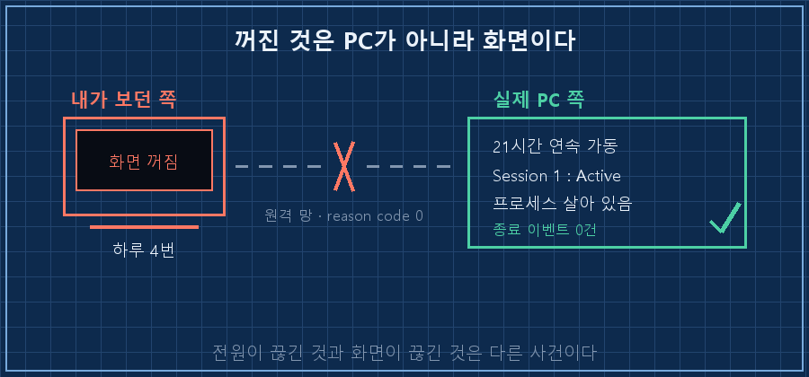
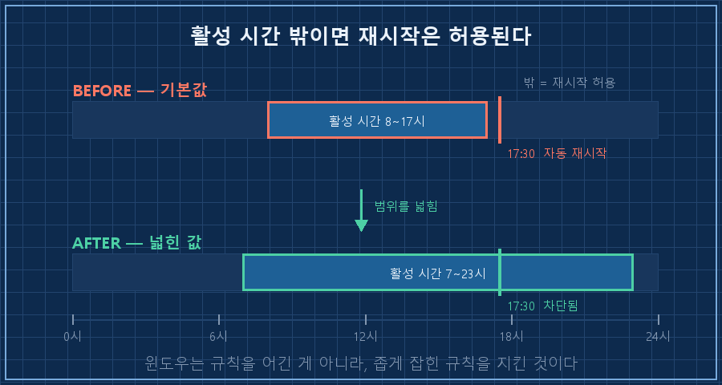
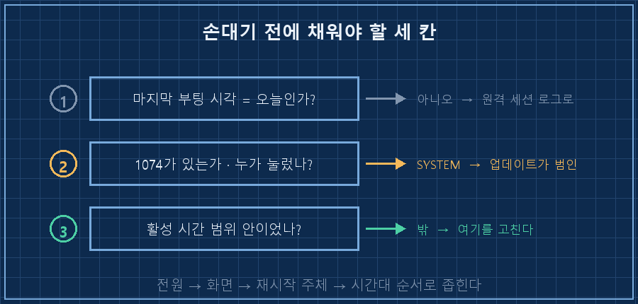

하루 동안 PC가 네 번 꺼졌다고 생각했어요. 원격으로 붙어서 일하는 중에 화면이 툭 날아가는 게 네 번이었거든요.
저녁에 로그를 열어봤습니다.
[System 로그 · 당일 하루치 조회]
41 / 6008 예기치 않은 종료 ........ 0건
1074 종료·재시작 개시 ........ 0건
42 / 506 절전 진입·복귀 .......... 0건
14:20~14:50 구간 이벤트 ............ 0건그날 이 PC는 한 번도 안 꺼졌더라고요.
결론부터 적을게요. 윈도우 업데이트 자동 재시작을 막을 때 손댈 곳은 설정 화면의 스위치가 아니라 활성 시간 범위입니다. 기본값이 8~17시라 퇴근하고 나면 재시작이 허용되는 구간에 그대로 들어가거든요. 제 PC가 진짜로 재부팅된 건 이틀 전 17시 30분, 활성 시간이 끝나고 딱 30분 뒤였습니다.
그 앞에 할 일도 하나 있어요. 진짜 꺼진 게 맞는지부터 확인하는 것. 저는 이 순서를 건너뛰고 이틀을 엉뚱한 데서 헤맸습니다.
저는 제조 현장에서 제어·자동화를 15년 했어요. 설비가 안 돈다고 연락이 오면 설비보다 통신선을 먼저 보는 동네입니다. 증상이 보이는 자리랑 고장 난 자리가 다른 경우가 워낙 많거든요. 그걸 매일 하는 사람이 제 PC한테는 똑같이 속았네요..
2026년 9월 기준, Windows 10 환경입니다. 회사 일이 아니라 개인 PC를 원격으로 붙여 쓰는 얘기예요.
정말 꺼진 게 맞는지 어떻게 확인하나요
마지막 부팅 시각 하나만 찍어보면 끝납니다. 그 시각이 오늘 안이 아니면, 오늘 꺼진 적이 없는 거예요.
(Get-CimInstance Win32_OperatingSystem).LastBootUpTime제 결과는 이랬습니다.
2026-09-17 17:30:45 ← 마지막 부팅
조회 시점까지 21시간 연속 가동네 번 꺼졌다고 믿었던 날은 9월 18일이었어요. 부팅 시각은 이틀 전이고요. 그러니까 그 PC는 그날 내내 멀쩡히 돌고 있었습니다.
여기서 걸리면 다음은 System 로그입니다. 이 세 종류만 보면 됩니다.
| 이벤트 ID | 뜻 | 제 결과(당일) |
|---|---|---|
| 41 / 6008 | 예기치 않은 종료 (전원이 그냥 끊김) | 0건 |
| 1074 | 누군가 종료·재시작을 개시함 | 0건 |
| 42 / 506 / 507 | 절전 진입 · 복귀 | 0건 |
Get-WinEvent -FilterHashtable @{LogName='System'; Id=1074,6008,41,42} -MaxEvents 20 |
Select-Object TimeCreated, Id, ProviderName세 줄 다 0건이면 답은 하나예요. 꺼진 건 PC가 아니라 내 화면입니다!
안 꺼졌는데 왜 화면이 날아갔나요
원격 접속이 끊긴 겁니다. 이건 PC 로그가 아니라 원격 세션 로그에 찍혀요.
제 원격 세션 기록은 이렇게 생겼습니다.
12:04 재연결 세션 rdp-tcp#6 원격 100.x.x.x
12:20 끊김 reason code 0
12:36 재연결
13:22 끊김 reason code 0
13:32 재연결
13:38 끊김 reason code 0
13:45 재연결Get-WinEvent -LogName Microsoft-Windows-TerminalServices-LocalSessionManager/Operational -MaxEvents 30 |
Select-Object TimeCreated, Id, Message세션 이름 끝의 숫자는 그날 몇 번째 연결인지예요. rdp-tcp#6이면 하루에 여섯 번 다시 붙었다는 뜻이죠.
중요한 건 reason code 0입니다. 서버가 끊은 게 아니라 클라이언트가 조용히 사라졌을 때 남는 값이에요. 세션 상태를 확인해보니 계속 Active였고요.
SESSIONNAME USERNAME ID STATE
rdp-tcp#6 (사용자) 1 Active접속이 끊겨도 세션은 살아 있고 그 안에서 돌던 프로그램도 안 죽습니다. 저쪽 PC는 아무 일도 없었고, 망이 끊긴 건 제가 들고 있던 기기 쪽이었어요.

여러분도 원격으로 붙여 쓰는 PC가 있으신가요? "꺼졌다"는 느낌이 들 때 그게 전원인지 화면인지부터 갈라보시면, 엉뚱한 데 손대는 시간이 확 줄어듭니다.
그럼 진짜 재시작은 누가 시켰나요
딱 한 번 있었고, 누른 사람은 윈도우 업데이트였습니다. 이틀 전 기록에 1074가 하나 찍혀 있었어요.
09-17 17:30 Event 1074
프로세스 : svchost.exe
사용자 : NT AUTHORITY\SYSTEM
사유 : 운영 체제 (계획된 재시작)1074의 좋은 점이 여기 있어요. 누가 눌렀는지가 같이 적힌다는 겁니다. 사용자 이름이 제 계정이면 제가 누른 거고, SYSTEM + svchost.exe면 업데이트가 누른 거예요. 이 한 줄이면 범인 찾기가 끝납니다.
문제는 그다음이었어요. 저는 재시작을 안 하도록 해뒀다고 생각했거든요. 그래서 활성 시간 값을 직접 읽어봤습니다.
ActiveHoursStart = 8 ← 오전 8시
ActiveHoursEnd = 17 ← 오후 5시재시작이 일어난 시각은 17시 30분. 활성 시간이 끝나고 30분 뒤였습니다. 윈도우 입장에선 규칙을 지킨 거예요. 5시 넘으면 사용 중이 아니라고 알고 있었으니까요.
저녁에도 일하고 새벽에도 스크립트가 도는 PC인데, 자기가 9시간짜리 근무를 한다고 믿고 있었던 겁니다..

윈도우 업데이트 자동 재시작은 어떻게 막나요
값 세 개를 넣었습니다. 관리자 권한 PowerShell에서 실행했어요.
# 1) 로그인한 사용자가 있으면 자동 재시작 금지
reg add "HKLM\SOFTWARE\Policies\Microsoft\Windows\WindowsUpdate\AU" /v NoAutoRebootWithLoggedOnUsers /t REG_DWORD /d 1 /f
# 2) 활성 시간을 실제 사용 시간대로 넓히기
reg add "HKLM\SOFTWARE\Microsoft\WindowsUpdate\UX\Settings" /v ActiveHoursStart /t REG_DWORD /d 7 /f
reg add "HKLM\SOFTWARE\Microsoft\WindowsUpdate\UX\Settings" /v ActiveHoursEnd /t REG_DWORD /d 23 /f한 줄이 길어 보여도 줄은 끊지 말고 그대로 한 줄로 넣으세요. 창마다 줄을 잇는 기호가 달라서, 다른 창에서 쓰던 기호를 그대로 붙이면 명령이 중간에서 잘립니다.
1번이 본잠금, 2번이 보조예요. 1번만 넣어도 로그인 상태면 막히지만, 잠금화면으로 두고 나갈 때를 생각하면 2번을 같이 넣는 게 마음 편합니다. 7~23시 범위는 문제없이 들어갔어요.
그리고 이건 공짜가 아닙니다. 설치는 계속되니까 보안 구멍이 생기진 않지만, 완료는 제가 직접 재부팅해야 됩니다. 그래서 주말에 한 번 껐다 켜는 걸 규칙으로 같이 붙였어요.
제대로 들어갔는지 확인하는 방법은 이렇습니다.
1. 값부터 되읽습니다. reg query로 세 값이 1, 7, 23으로 찍히는지, 타입이 REG_DWORD인지 같이 보세요. 문자열로 들어가면 무시됩니다.
2. 다음 부팅 시각이 내가 누른 시각과 일치하는지 봅니다. 안 누른 시각에 찍혀 있으면 아직 안 막힌 거예요.
3. 한 달쯤 뒤에 1074를 다시 조회해 SYSTEM 개시 건이 0인지 봅니다. 설정은 넣는 순간이 아니라 한 달 뒤에 검증되는 것이더라고요.

참고로 제 경우엔 원인이 하나가 아니었어요. 체감한 네 번은 원격 끊김, 진짜 재시작은 이틀 전 업데이트, 엿새 전엔 절전에서 못 깨어난 전원 손실이 따로 두 건. 증상이 하나라고 원인도 하나인 건 아니었습니다.
이 얘기 하면 나오는 질문들
Q. 설정 앱에서 "업데이트 후 자동으로 다시 시작" 끄면 되는 거 아닌가요?
그 스위치는 "재시작 전에 알림 표시"에 가까워서, 알림이 뜨고 시간이 지나면 결국 재시작합니다. 게다가 그 화면만 봐선 활성 시간이 8~17시라는 게 눈에 안 들어와요. 저도 값을 직접 읽기 전까지는 몰랐습니다.
Q. 활성 시간을 하루 24시간으로 잡아버리면 제일 깔끔하지 않나요?
범위에 상한이 있어서 24시간 전체로는 안 잡히는 걸로 압니다. 제가 직접 확인한 건 7~23시(16시간)가 정상으로 들어간다는 것까지고, 상한이 몇 시간인지는 안 재봤어요. 어차피 시간대만으로 다 막으려는 접근이 위태로워서, 잠금값(1번)을 본체로 두는 게 낫습니다.
Q. 원격이 자꾸 끊기는 건 어떻게 고쳤나요?
아직 못 고쳤습니다. reason code 0이 가리키는 건 접속하는 쪽 기기의 망이라 이 PC에서 할 수 있는 게 없어요. 다만 원인을 PC에서 기기로 옮겨놓은 것만으로 헛수고가 줄었습니다. 이틀 동안 멀쩡한 PC의 전원 설정을 뒤지고 있었거든요..
Q. 자동화 PC라면 어떤 값을 먼저 봐야 하나요?
재시작 시각과 스크립트 실행 시각이 겹치는지부터 보세요. 새벽에 도는 작업이 있어도 활성 시간을 거기까지 늘리는 게 아니라, 잠금값(1번)으로 막고 재부팅을 제 손으로 잡는 편이 안전합니다.
이틀을 헤매고 얻은 건 설정값 세 개가 아니라 순서였어요. 전원인지 화면인지, 누가 눌렀는지, 어느 시간대였는지. 이 세 칸을 채우기 전에 손대면 멀쩡한 걸 고치게 됩니다. 윈도우 업데이트 자동 재시작은 그 세 번째 칸에서야 범인으로 확정되는 거고요!
이렇게 한 번씩 건드린 PC 설정값들은 makefield.ai 한쪽에 "왜 이 값을 넣었는지"랑 같이 목록으로 모아두는 중이에요.
다음 편은 재부팅을 제 손으로 잡기로 한 뒤에, 밀린 패치를 놓치지 않으려고 붙인 확인 루틴 얘기로 가겠습니다.
태그: #윈도우업데이트자동재시작 #활성시간설정 #컴퓨터혼자재부팅 #윈도우자동재시작끄기 #이벤트뷰어 #윈도우10설정 #원격데스크톱끊김 #PC절전문제 #자동화PC관리 #이벤트로그분석 #윈도우레지스트리 #AI자동화구축 #개인AI에이전트 #자동화서버관리 #도면읽는AI